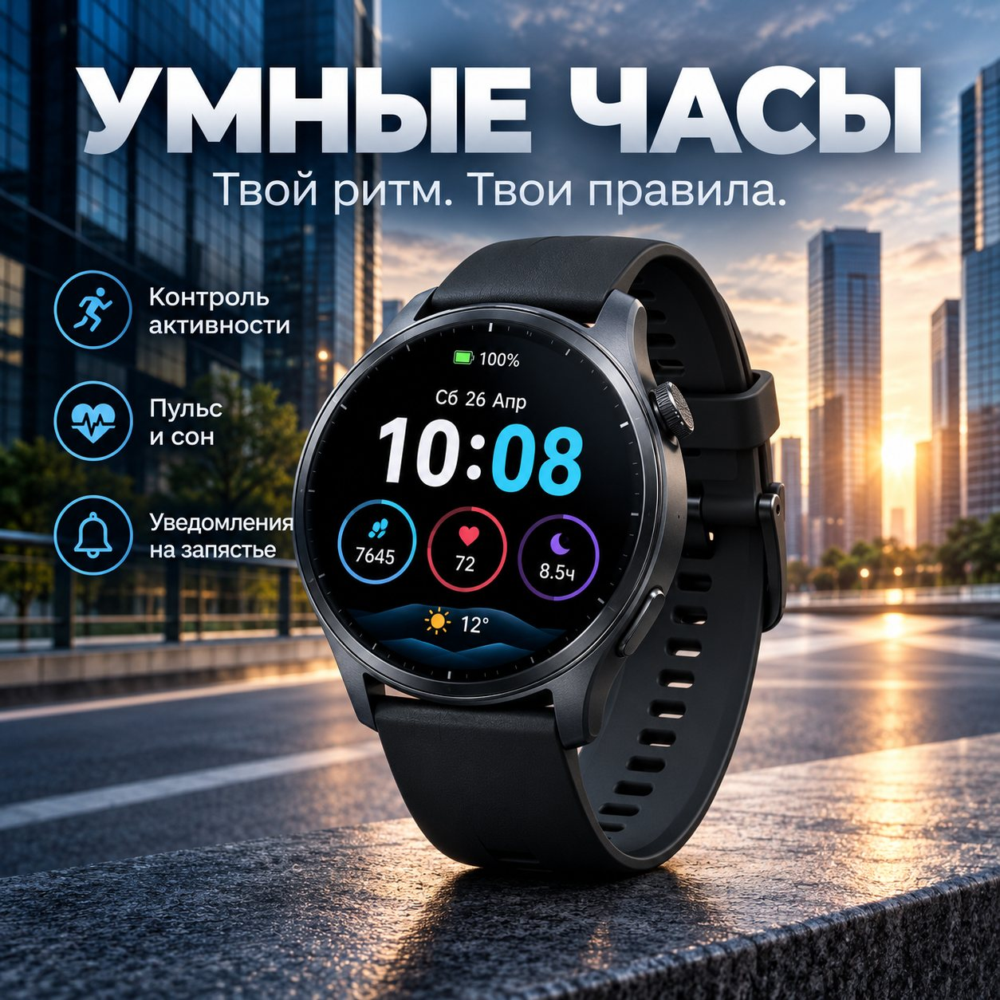
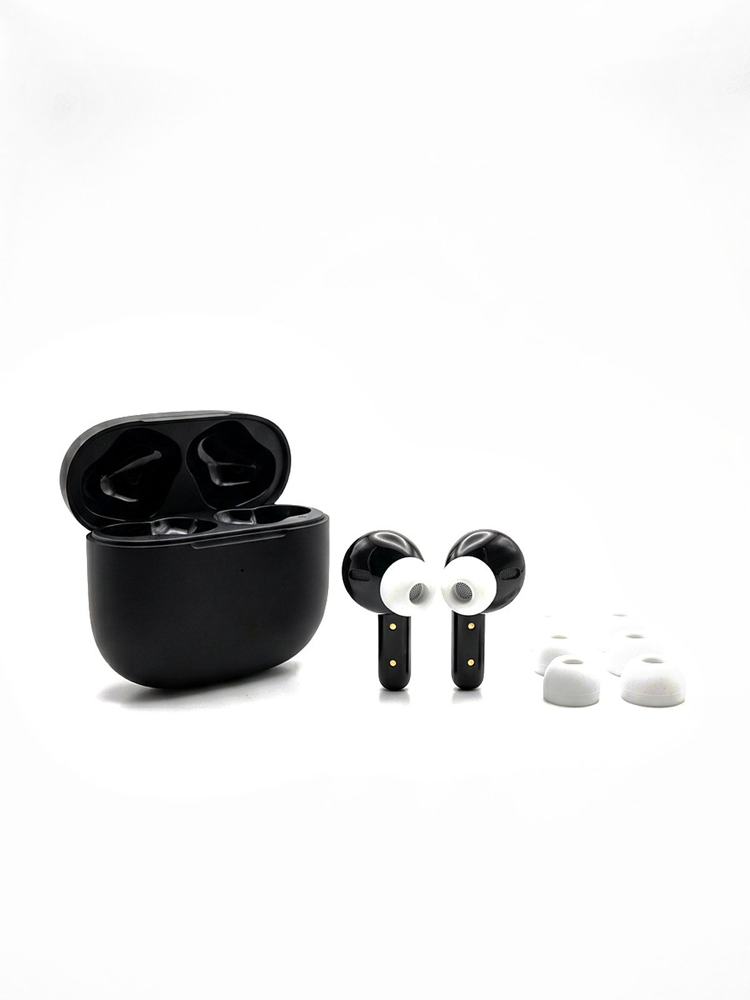
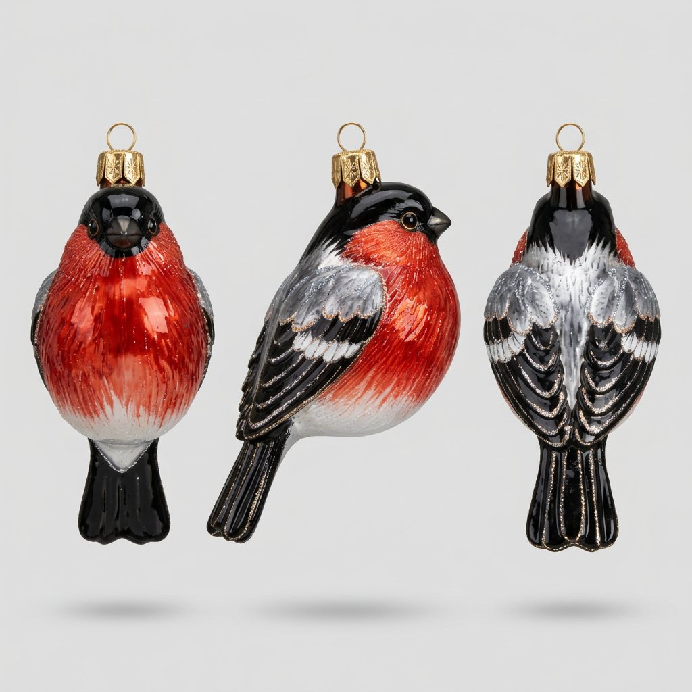
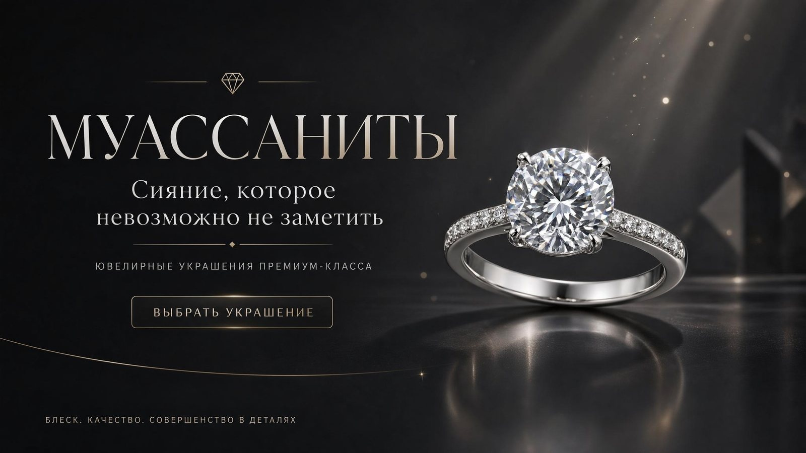
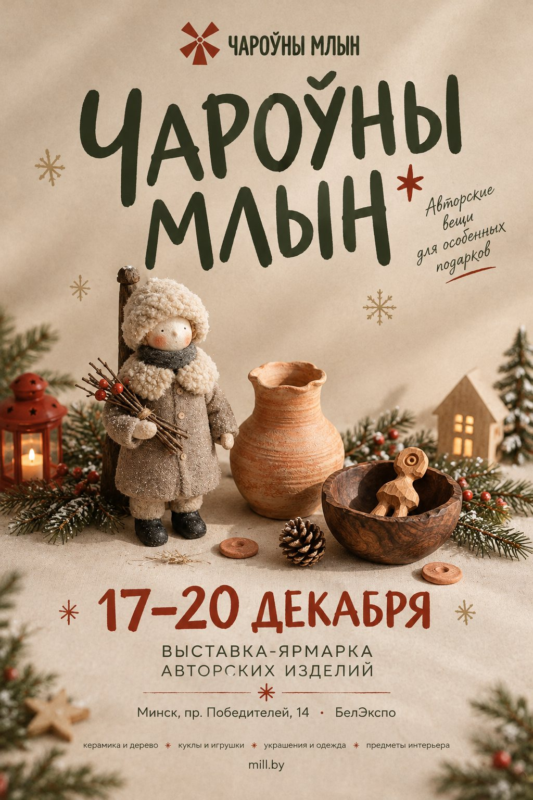
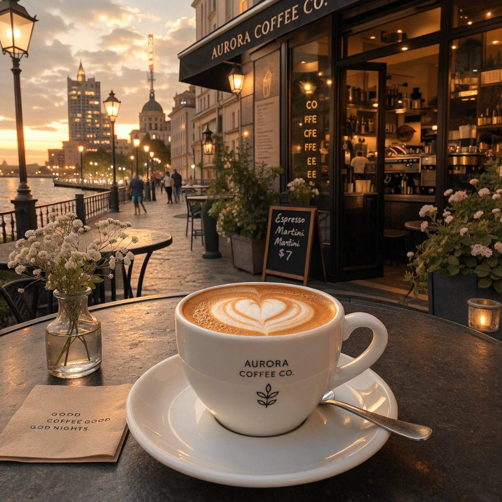
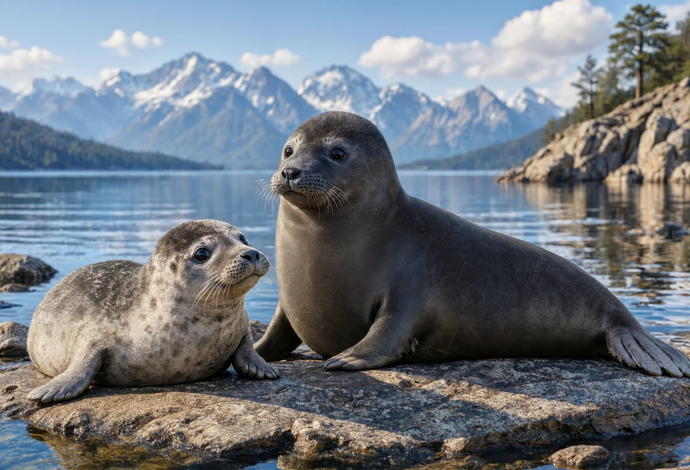

От идеи и промпта — до готовой карточки товара, баннера или ролика. Карточки для маркетплейсов, рекламные визуалы, предметная «фотография» без фотостудии и AI-видео.
Каждый визуал сгенерирован нейросетью по авторскому промпту и доведён до коммерческого качества

Рекламная карточка 1:1 для маркетплейса: кинематографичный свет, город на рассвете, русский заголовок и инфографика прямо на изображении — одна из самых сложных задач для нейросетей.

Студийная «съёмка» TWS-наушников на белом фоне — часть карточки под ключ: SEO-заголовок, описание, характеристики, ответы на отзывы.

Ёлочная игрушка ручной работы по фото-референсу: строгий промпт на 100% сохранение цвета, фактуры стекла и деталей — фронт, профиль, спина.

Рекламный баннер 16:9 для ювелирного бренда: типографика, CTA-кнопка и товарная фотография — в одной генерации.

Постер выставки-ярмарки авторских изделий с фирменной типографикой и тёплой предметной сценой ручной работы.

Капучино на закате у набережной: перенос сцены и замена фона в режиме image-to-image — контент для соцсетей без выездной съёмки.

Дикая природа в фотореалистичном качестве: свет, текстуры шерсти, отражения на воде.
Text-to-video генерация в Vidu с управлением камерой по промпту: камера плавно отдаляется от движущегося автомобиля, объект остаётся консистентным на протяжении всего кадра — без искажений и «плавания» деталей.
Каждая работа строится на структурированном промпте с ролью, ограничениями и критериями качества
Фрагмент реального рабочего промпта: